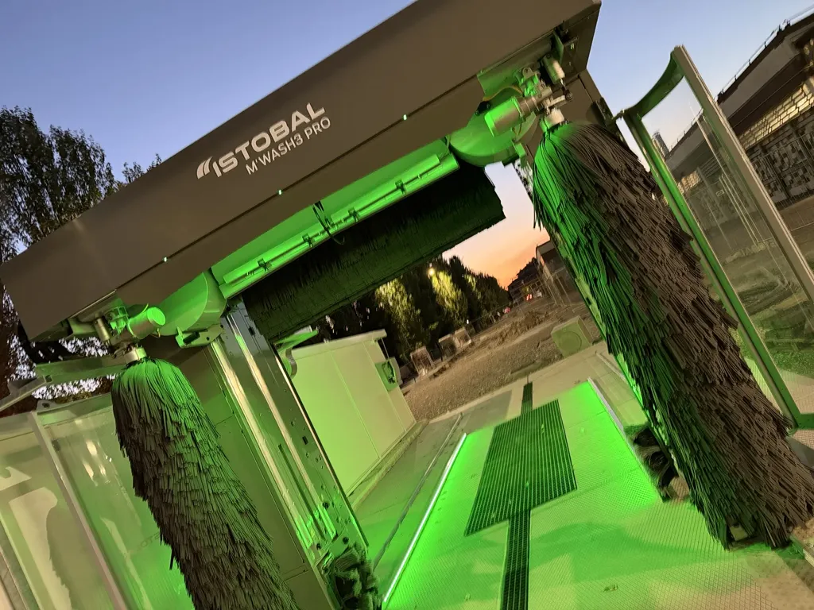
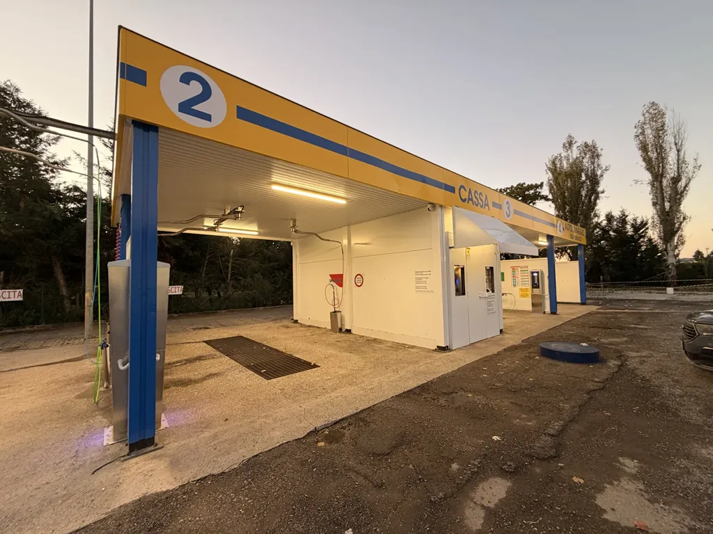
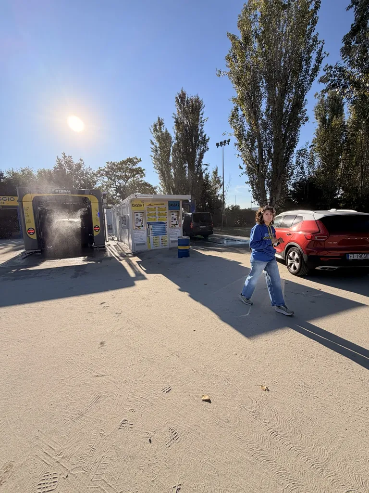
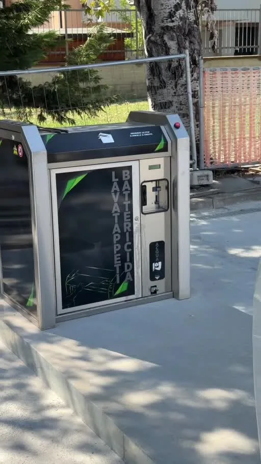
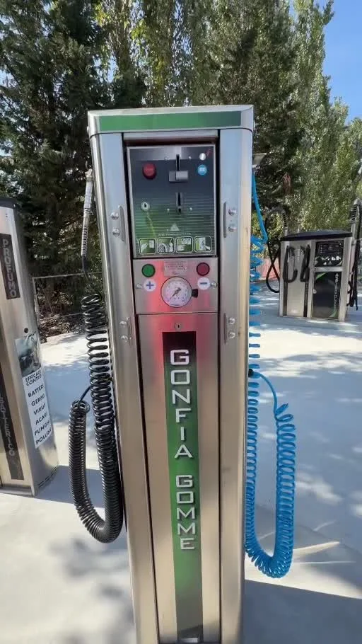
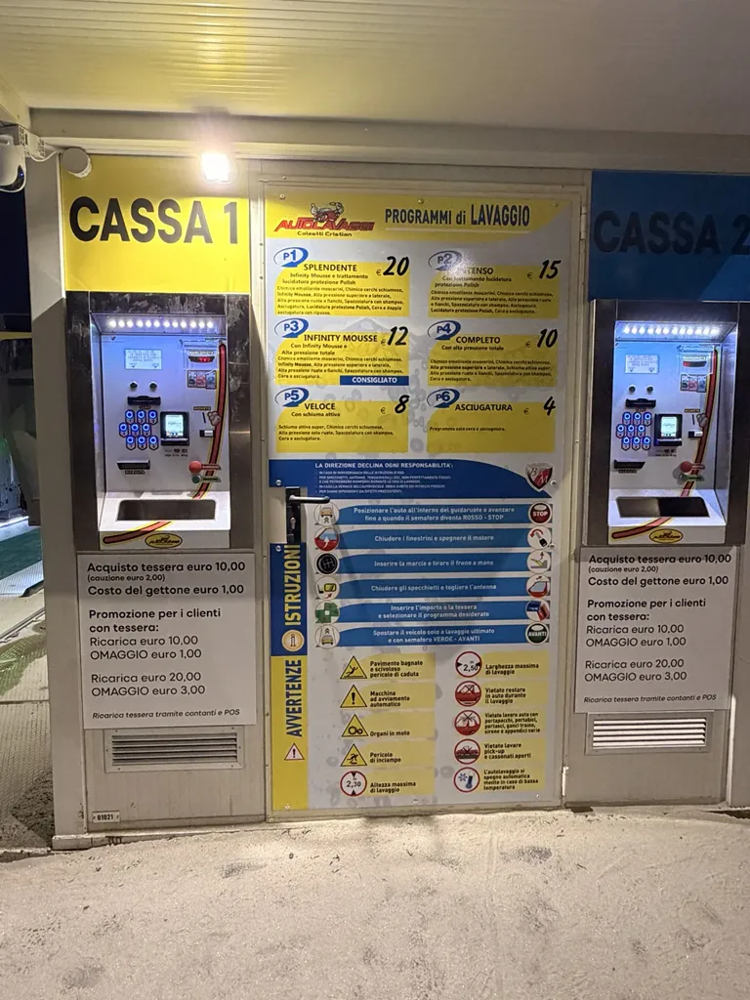
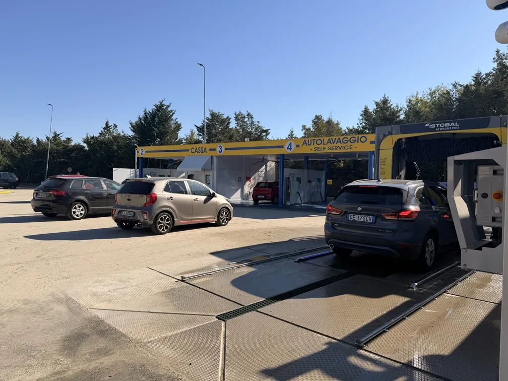
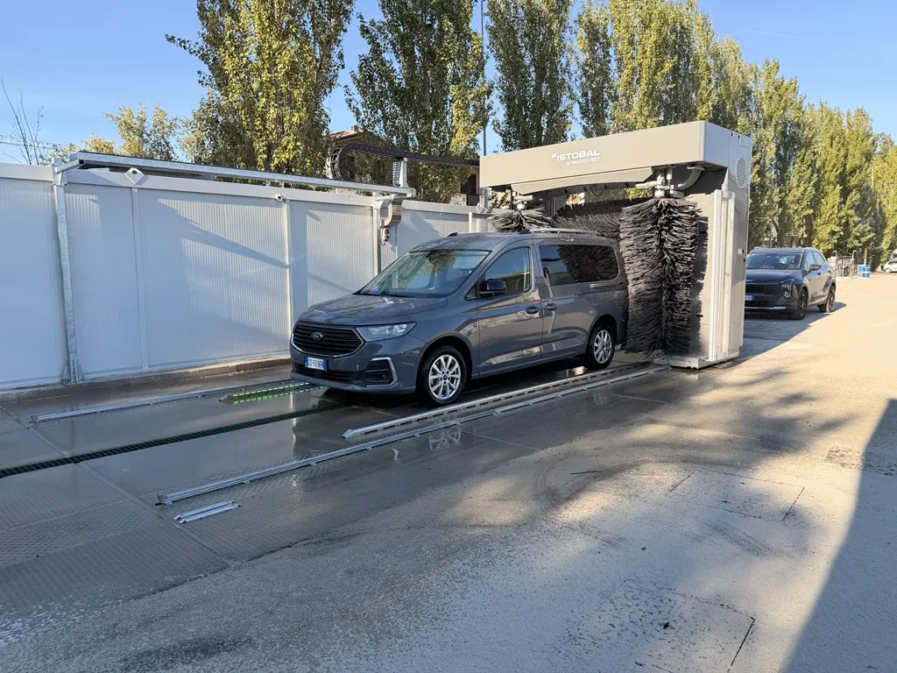
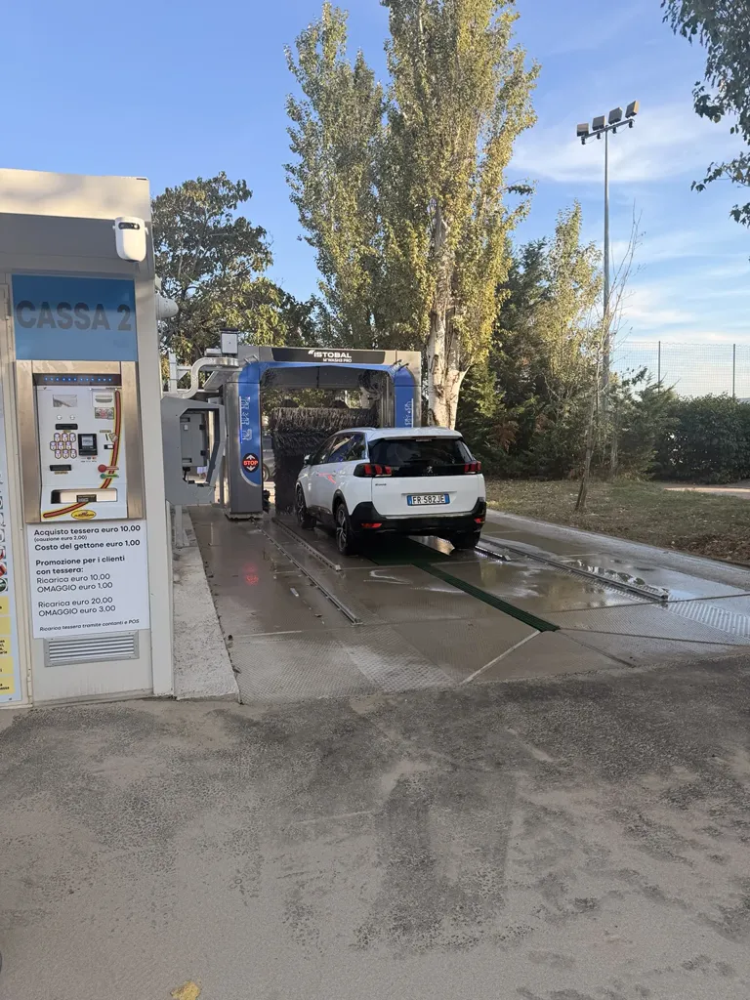
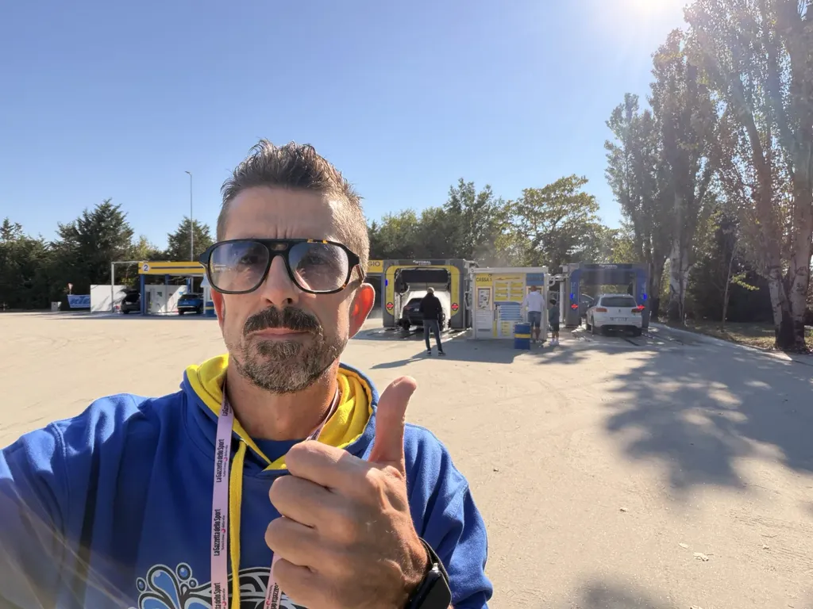

Automatico a tre spazzole
Entri, scegli il programma e in pochi minuti esci pulito. Due impianti nuovi, senza fare la fila.
—Fidenza · dietro la Coop
Impianto automatico a tre spazzole, piste self service e area aspirazione. Lo storico autolavaggio di Fidenza, con attrezzature nuove.
I servizi
Chi ha fretta entra nell'automatico ed esce pulito. Chi ci tiene prende la lancia e se la lava come vuole. Dentro, l'aspirazione e il lavatappeti.

Entri, scegli il programma e in pochi minuti esci pulito. Due impianti nuovi, senza fare la fila.
—
La lancia è in mano tua. Prelavaggio, schiuma, risciacquo e cera, nei tempi che decidi tu.
—
Il lavaggio non finisce fuori. Aspiri i sedili, il baule e il tappetino senza spostare l'auto.
—
I tappetini entrano sporchi ed escono lavati mentre tu finisci l'esterno.
—
Già che sei qui, controlli le gomme. Due minuti e riparti a posto.
—
Ricarichi la tessera una volta e lavi quando vuoi, senza cercare monete.
—Come funziona
Quattro passaggi, cinque minuti. Non devi scendere dall'auto.
Programma base o completo. Paghi con la tessera o come preferisci.
Avanzi fino al segnale di stop. Da lì in poi fa tutto l'impianto.
Prelavaggio, schiuma attiva, tre spazzole e risciacquo. È il video che hai percorso qui sopra.
Esci asciutto e, se vuoi, passi all'aspirazione e al lavatappeti.
La struttura
Niente foto di archivio: è l'autolavaggio come lo trovi arrivando.




Recensioni
Le recensioni su Google sono quello che decide chi compare per primo quando a Fidenza si cerca «autolavaggio». Non si comprano: si chiedono, una per una, a chi esce con l'auto pulita.
Questo codice si stampa e si attacca alla cassa e su ogni pista. Chi lo inquadra arriva alla pagina recensioni in un tocco.
Da stampare · formato A5Dove siamo
Via Giavazzoli 1/a, dove c'era il vecchio autolavaggio Garden. Si entra dal piazzale: lo vedi dalla strada, è quello con la pensilina gialla e blu.
Domande
In Via Giavazzoli 1/a a Fidenza, dietro il centro commerciale Coop, dove c'era il vecchio autolavaggio Garden. Si vede dalla strada: è quello con la pensilina gialla e blu.
Nell'automatico entri, scegli il programma e in pochi minuti esci pulito senza scendere dall'auto. Nel self service la lancia è in mano tua: lavi quello che vuoi, nei tempi che vuoi, e spendi in base a quanto ci stai.
Sì. C'è l'area aspirazione per sedili e baule, il lavatappeti per i tappetini e il gonfiagomme per controllare le gomme prima di ripartire.
I prezzi dei programmi vanno confermati dal titolare e andranno scritti qui, accanto a ogni servizio. È la domanda che si fanno tutti prima di venire: lasciarla senza risposta manda il cliente a cercare altrove.
Da confermare: contanti, tessera ricaricabile, carta o app. Va scritto, perché chi arriva senza monete e non trova alternative se ne va.